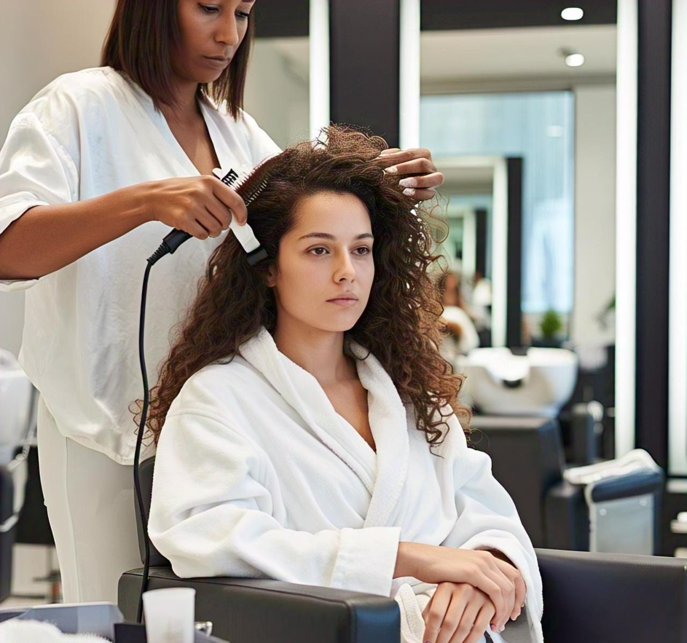

Planchado y Base Permanente
En el salón de belleza Naty's te ofrecemos servicios de alisado y base permanente para transformar tu look,
cuidar tu cabello y ayudarte a sentirte increíble todos los días.
Planchado (Alisado)
- Planchado tradicional: Liso temporal – Hasta el próximo lavado
- Tiempo: 1 – 1.5 horas
- Precio: $200 – $450 MXN
- Alisado con keratina: Liso natural y sin frizz
- Duración: 2 – 4 meses
- Tiempo: 2 – 3 horas
- Precio: $700 – $1,800 MXN
- Alisado japonés o brasileño: Liso duradero (tabla o con movimiento)
- Duración: 6 – 12 meses
- Tiempo: 3 – 5 horas
- Precio: $1,500 – $3,000 MXN
Base Permanente (Ondulado o Rizado)
- Estilo: Rizos pequeños, medios o grandes
- Duración del efecto: 2 – 4 meses
- Tiempo de aplicación: 1.5 – 3 horas
- Precio: $400 – $1,000 MXN
Recomendaciones
- No lavar el cabello durante las primeras 48 horas.
- Usar champús sin sulfato ni sal.
- Realizar prueba de sensibilidad antes del servicio.
- Ideal para facilitar el peinado diario o renovar el look.

Volver a la página principal